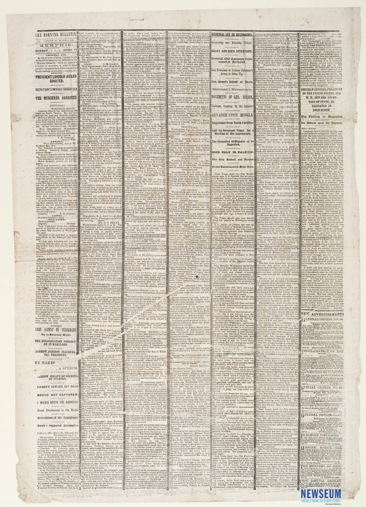

HN-197: First assassination telegram misstates the fate of Secretary Seward
HN-197 · April 20, 1865 · Crime, Law & Justice > Murders & Assassinations > Political assassinations

page scanRecorded finding
April 1865 newspapers falsely reported Secretary William Seward killed during assassination attack; he survived.
Discovery narrative
Source: Crawfordsville Weekly Journal, p. 1, reprinting hurried April 14–15 Washington dispatches — original page; U.S. State Department's April 15 correction.
Report: Amid the devastating news of Abraham Lincoln's assassination, one early dispatch said the president, Secretary William H. Seward, and his son had been assassinated. In fact, Seward and his son were gravely injured in the coordinated attack but survived. An official diplomatic report dated April 15 already described the assault on Seward as unsuccessful.
Assessment: Identifiable false early-news claim directly corrected by contemporary government documentation. This is an ordinary example of incomplete breaking news, not evidence of suppression. Correction established.
Curated audit flag
Class: Revision/retraction (R)
Recorded difference/concern: April 1865 newspapers falsely reported Secretary William Seward killed during assassination attack; he survived.
Assessment: At least several precise Detroit/Memphis/Alabama issue leads, but original pages not systematically read.
Source links: https://www.detroithistorical.org/learn/online-research/collection/archive/newspaper-detroit-tribune-vol-xxix-no-234 https://rememberinglincoln.fords.org/node/673 https://rememberinglincoln.fords.org/node/192
Original archive images (4)
Authentic images retrieved from Ford's Theatre, Remembering Lincoln (The Morning Bulletin scan), Hoosier State Chronicles (Indiana State Library), Detroit Historical Society and Ford's Theatre, Remembering Lincoln (Demopolis Herald reprint scan). Article crops are located using the archive's own OCR word coordinates and rendered at native crop resolution; article clips are assembled from the archive's own article-block images; page images marked "archive tiles" are stitched from the archive's own tiled page service at its 256-px tile cap; page images marked "issue PDF" are single pages rasterised from the archive's own issue PDF, with the page chosen by matching the headline against the PDF's text layer; page scans are reduced-size access renditions. No images were generated, mocked, or retouched.

Ford's Theatre, Remembering Lincoln (The Morning Bulletin scan)
Open larger view · Archive viewer (full resolution)

Hoosier State Chronicles (Indiana State Library)
Open larger view · Archive viewer (full resolution)

Detroit Historical Society
Open larger view · Archive viewer (full resolution)

Ford's Theatre, Remembering Lincoln (Demopolis Herald reprint scan)
Open larger view · Archive viewer (full resolution)
Source acquisition
Status: Archive images acquired
Authentic archive-owned image renditions were retrieved for this record and are displayed above. The source-acquisition manifest preserves the original pre-acquisition feasibility assessment.
Original seed
URL (preserved verbatim): https://newspapers.library.in.gov/?a=d&d=CWJ18650420.1.1
Saved research report: Historical_Newspaper_Event_Research_178-202_2026-10-22.md
Evidence note: A newspaper report means a historical publication made a claim; it does not establish that claim as fact. Contemporary reporting is separated from later scholarly context and our own assessment.